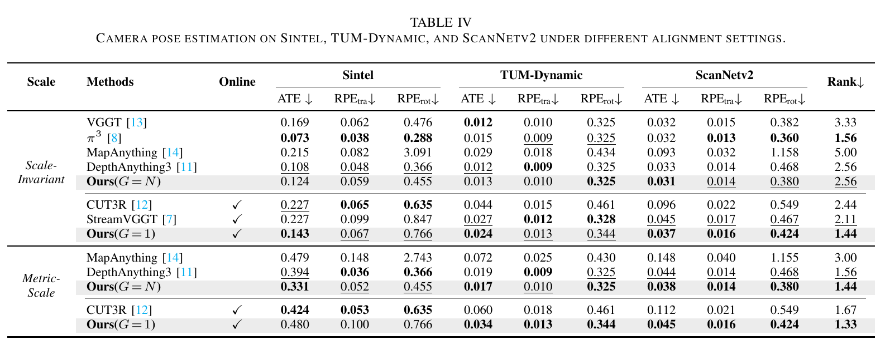
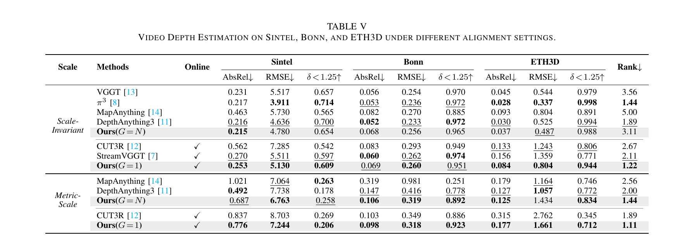
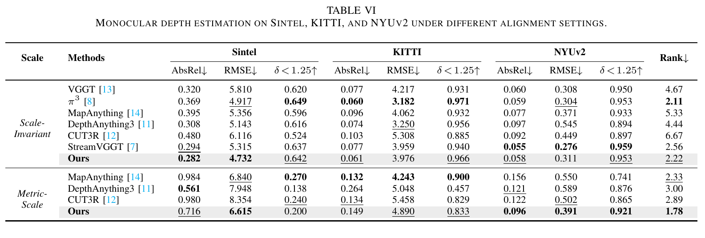
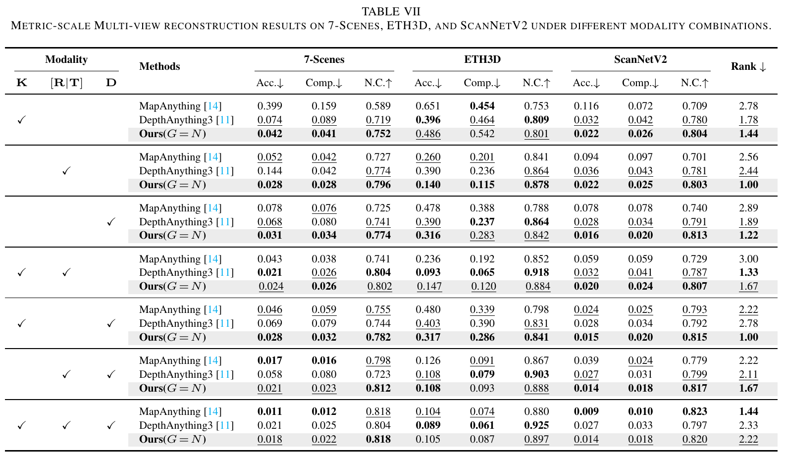
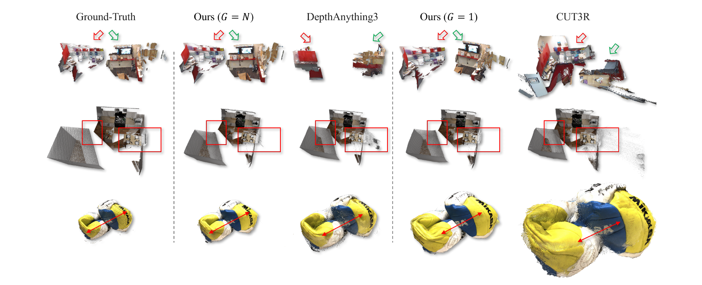

1Intelligent Transportation Thrust of the Systems Hub, Hong Kong University of Science and Technology (GZ), Guangzhou, P.R. China
2National Key Laboratory of Human-Machine Hybrid Augmented Intelligence, Xi'an Jiaotong University, Xi'an, P.R. China
3Applied Science, Amazon.com, Inc., USA
†Corresponding authors:
xinhuzheng@hkust-gz.edu.cn,
mengyang@mail.xjtu.edu.cn
We present UniT, a unified feed-forward model that reformulates a wide range of geometry perception capabilities into a single framework, covering diverse view configurations, modality combinations, metric-scale perception, and long-horizon scalability. It supports both online and offline inference over an arbitrary number of views, flexibly incorporates auxiliary modalities such as camera parameters and depth maps, recovers geometry in metric scale measured in meters, and maintains bounded complexity over long horizons in in-the-wild environments.
Examples
Drag to rotate, scroll to zoom, switch scenes with the thumbnails — or click 📏 Measure distance to check real-world distances between any two points.
Click two points to measure distance
Click a thumbnail or the Examples tab to load the point cloud.
Try It Yourself
Upload your images and run UniT directly in your browser.
UniT is evaluated on 10 benchmark datasets, covering 7 representative geometry perception tasks, against 6 recent and representative baselines, under both scale-invariant and metric-scale settings.
Multi-view reconstruction is evaluated on the scene-level real-world 7-Scenes and synthetic NRGBD datasets, as well as the object-centric DTU dataset.
B. Camera Pose Estimation

Camera pose estimation is conducted on the synthetic outdoor Sintel dataset and the real-world indoor TUM-Dynamic and ScanNetv2 datasets.
C. Video Depth Estimation

Video depth estimation is evaluated on Sintel and the real-world Bonn and ETH3D datasets.
D. Monocular Depth Estimation

Monocular depth estimation is assessed on Sintel, and the widely used KITTI and NYUv2 datasets.
E. Long-Horizon Perception
Fig. 9 (top). Pose accuracy (ATE) on NRGBD.Fig. 9 (bottom). Depth accuracy (RMSE) on NRGBD.
Long-horizon perception is evaluated on the NRGBD dataset with different sequence lengths, ranging from 50 to 500 with a stride of 50.
F. Multi-Modal Reconstruction

Multi-modal reconstruction includes arbitrary combinations of depth maps, camera intrinsics, and extrinsics on 7-Scenes, ETH3D, and ScanNetv2 datasets.
G. Depth Completion
Depth completion evaluates raw depth maps with four sparse patterns on Sintel, KITTI, and NYUv2 datasets.
Visualizations

Fig. 8. Qualitative results on multi-view reconstruction. All point clouds are presented in their raw form, without any alignment or filtering. Point clouds within the same row are displayed at a consistent scene scale.
Citation
@article{wang2026unit,
title={UniT: Unified Geometry Learning With Group Autoregressive Transformer},
author={Wang, Haotian and Huang, Yusong and Kuang, Zhaonian and Lu, Hongliang and Zheng, Xinhu and Yang, Meng and Hua, Gang},
journal={arXiv preprint arXiv:2601.00000},
year={2026}
}